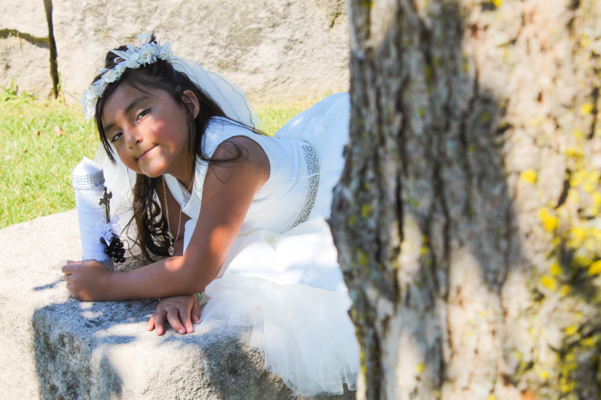
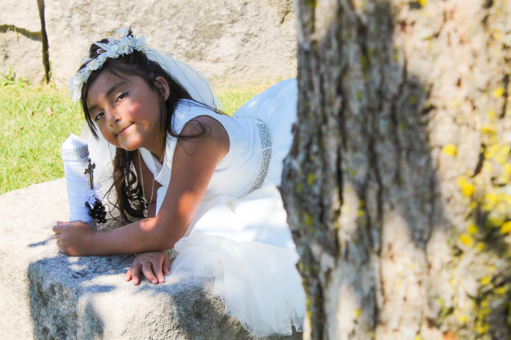
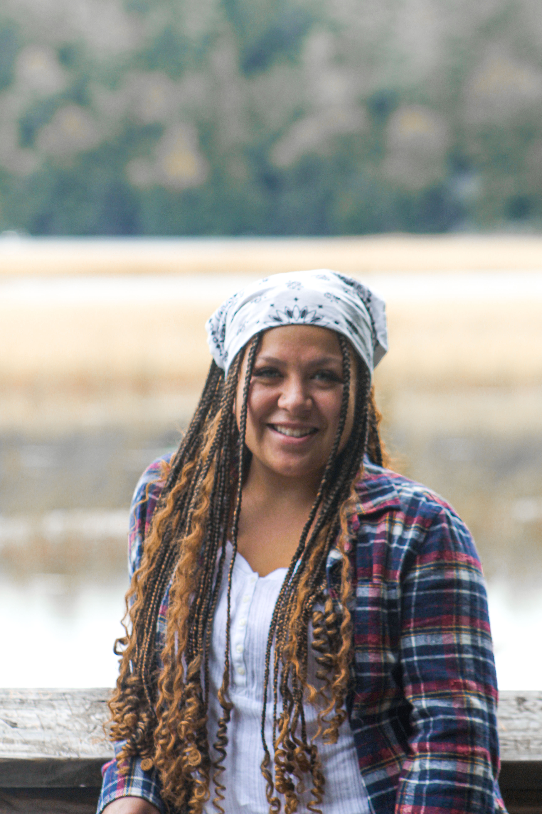
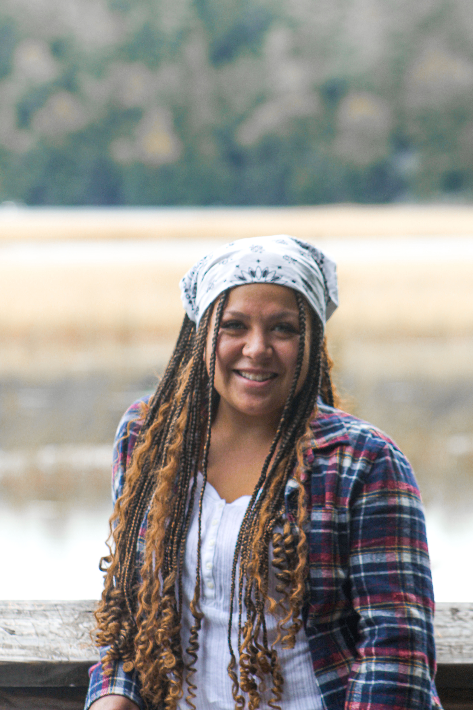

Baptism
Meet Zury
Meet Zury. She is so smart, caring, clever, and not to mention, hilarious. I met her the summer of 2020, when I thought the pandemic would already be over, at my internship. I met Zury, and I instantly clicked with her so much that I consider her my little sister. These photographs of her were taken on the day of her baptism that same summer, and they are representative of the caring nature and soft spirit Zury exhibits.
 

Engagement
Meet Alanah and Chris
Meet Alanah and Chris, a match made in heaven, for real though. Alanah is currently pursuing her Ph.D in Space, Sciences, and Engineering (go Alanah!) and Chris just graduated with his Master's in Nuclear Engineering. In August they will be officially committing to each other for the rest of their lives, and I cannot be more excited for them! I'm literally jumping out of excitement. These photographs capture their genuine love for each other, but also their loving and giving nature as individuals. I'm not kidding when I say giving, they feed me so well every time I hang out with them.
Portraits
Meet my Best Friends
These pictures Andréa, Jose, and Emily. They're always down to model for me when I want to experiment with my camera. Andréa and I met in 2017 at a retreat, and our friendship started when we histerically laughed at the fact that we were looking at a restaurant's menu 5 hours before we planned to go with the rest of our retreat group. Our friendship has existed since then, so expect more pictures of her on here soon. These are some of the pictures I took in 2021 for a digital photography course. Enjoy!
 
